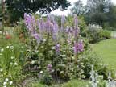
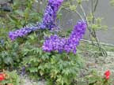
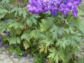
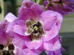

Larkspur
Delphinium species
Other names
Description
Plants range in height from 15 120 cm tall and have alternate deeply lobed leaves and spikes of spurred white, blue or purple flowers. The roots grow in tuberous clusters.
Similar plants
Garden larkspurs are mostly D. orientale or hybrids, Consolida ambigua (previously D. ambiguum or D. ajacis) is naturalised in NZ. All are poisonous. Closely related to monk’s hood.
Distribution
A garden plant. Occasionally found about rubbish dumps and waste places.
Toxin
Polycyclic diterpenoid alkaloids (delphinine) are in all parts of the plant and remain toxic in dried plants. They are neuromuscular blocking agents that affect cholinergic and nicotinic receptors. Ajacine, ajaconine and several other alkaloids are important. All parts of the plant are toxic. New growth and seeds have the highest concentrations of toxin, toxicity declines over the growing season. Poisonings may occur when plants are thrown into stock paddocks surrounding a house. Poisonings are not common in NZ.
Species affected
Highly palatable to cattle: sheep and horses are considered less susceptible to poisoning.
Clinical signs acute
Clinical signs appear within a few hours of ingestion and include nervousness, weakness, muscle trembling, paresis and a staggering gait. Animals may fall suddenly. Salivation, muscular twitching, nausea and vomiting, bloat, rapid irregular pulse are seen. The signs progress to severe weakness, prostration and convulsions. In small animals gastrointestinal signs are seen and include vomiting.
Clinical signs chronic
Post mortem signs
Plant material in the rumen or stomach. Lesions are not usually associated with toxicosis. Congestion and bloat may be seen.
Diagnosis
History and clinical signs.
Differential diagnosis
Ingestion of other cholinergic blockers eg. deadly nightshade, henbane, various mushrooms, ground cherry, matrimony vine, jessamine, potato, black nightshade, tomato leaves and Jerusalem cherry. Poisoning with organochlorine insecticides, ethylene glycol, oil/fuel ingestion, lead, selenium and urea toxicoses. Heart failure and cerebral damage.
Treatment
Treat symptomatically. Reduce absorption and speed elimination with activated charcoal and laxatives when appropriate. Relieve bloat and keep animal in a quiet, 'stress free' area. Physostigmine (approximately 0.06 mg/kg IV) may be helpful in correcting the neuromuscular blockade.
Prognosis
Depends on amount of plant material ingested. Prognosis is good for animals showing mild clinical signs and most recover with good nursing care.
Prevention
Remove plants or prevent access.
References
Conner H.E. The Poisonous Plants In New Zealand. 1992. GP Publications Ltd, Wellington
Parton K, Bruere A.N. and Chambers J.P. Veterinary Clinical Toxicology, 2nd ed. 2001. Veterinary Continuing Education Publication No. 208
|  bush |
 |
|
|
 |
 |
|
|
|
||
|
|
|
|